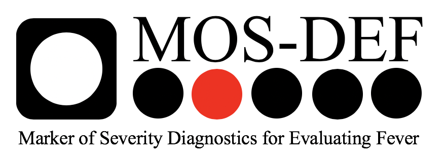

15 Funding & Declarations
15.1 Funding
This work was funded by Global Health Labs and the United Kingdom Foreign, Commonwealth and Development Office (FCDO).
15.2 Ethics statement
Ethical approval for this study was granted by the ethics committee of the London School of Hygiene & Tropical Medicine, as well as the National Ethics Committee for Health Research of the Lao People’s Democratic Republic (Lao PDR), where sample collection took place. Informed consent or assent was given by all participants, or their carers or guardians, as appropriate.
15.3
15.4 MIT License
(C) 2024, Chrissy h Roberts, Tegwen Marlais. LSHTM
Permission is hereby granted, free of charge, to any person obtaining a copy of this software and associated documentation files (the “Software”), to deal in the Software without restriction, including without limitation the rights to use, copy, modify, merge, publish, distribute, sublicense, and/or sell copies of the Software, and to permit persons to whom the Software is furnished to do so, subject to the following conditions: The above copyright notice and this permission notice shall be included in all copies or substantial portions of the Software.
THE SOFTWARE IS PROVIDED “AS IS”, WITHOUT WARRANTY OF ANY KIND, EXPRESS OR IMPLIED, INCLUDING BUT NOT LIMITED TO THE WARRANTIES OF MERCHANTABILITY, FITNESS FOR A PARTICULAR PURPOSE AND NONINFRINGEMENT. IN NO EVENT SHALL THE AUTHORS OR COPYRIGHT HOLDERS BE LIABLE FOR ANY CLAIM, DAMAGES OR OTHER LIABILITY, WHETHER IN AN ACTION OF CONTRACT, TORT OR OTHERWISE, ARISING FROM, OUT OF OR IN CONNECTION WITH THE SOFTWARE OR THE USE OR OTHER DEALINGS IN THE SOFTWARE.
15.4.1 Disclaimer 1
This project makes use of third-party R packages, which are dynamically linked. To the best of our knowledge, this project does not incorporate or statically link any third-party code. The licenses of these third-party packages are respected and their respective notices are included below. Please refer to the documentation of each package for more details about their licenses and terms of use.
package packrat.version License
1 BiasedUrn 2.0.12 GPL-3
2 DBI 1.2.3 LGPL (>= 2.1)
3 KernSmooth 2.23-24 Unlimited
4 MASS 7.3-60.2 GPL-2 | GPL-3
5 Matrix 1.7-0 GPL (>= 2) | file LICENCE
6 MatrixModels 0.5-3 GPL (>= 2)
7 R6 2.5.1 MIT + file LICENSE
8 RColorBrewer 1.1-3 Apache License 2.0
9 ROCit 2.1.2 GPL-3
10 Rcpp 1.0.12 GPL (>= 2)
11 RcppEigen 0.3.4.0.0 GPL (>= 2) | file LICENSE
12 SparseM 1.83 GPL (>= 2)
13 TH.data 1.1-2 GPL-3
14 abind 1.4-5 LGPL (>= 2)
15 askpass 1.2.0 MIT + file LICENSE
16 backports 1.5.0 GPL-2 | GPL-3
17 base64enc 0.1-3 GPL-2 | GPL-3
18 bit 4.0.5 GPL-2 | GPL-3
19 bit64 4.0.5 GPL-2 | GPL-3
20 blob 1.2.4 MIT + file LICENSE
21 boot 1.3-30 Unlimited
22 broom 1.0.6 MIT + file LICENSE
23 bslib 0.7.0 MIT + file LICENSE
24 cachem 1.1.0 MIT + file LICENSE
25 callr 3.7.6 MIT + file LICENSE
26 car 3.1-2 GPL (>= 2)
27 carData 3.0-5 GPL (>= 2)
28 cellranger 1.1.0 MIT + file LICENSE
29 class 7.3-22 GPL-2 | GPL-3
30 classInt 0.4-10 GPL (>= 2)
31 cli 3.6.2 MIT + file LICENSE
32 clipr 0.8.0 GPL-3
33 codetools 0.2-20 GPL
34 colorspace 2.1-0 BSD_3_clause + file LICENSE
35 commonmark 1.9.1 BSD_2_clause + file LICENSE
36 conflicted 1.2.0 MIT + file LICENSE
37 cpp11 0.4.7 MIT + file LICENSE
38 crayon 1.5.2 MIT + file LICENSE
39 crosstalk 1.2.1 MIT + file LICENSE
40 crul 1.4.2 MIT + file LICENSE
41 curl 5.2.1 MIT + file LICENSE
42 data.table 1.15.4 MPL-2.0 | file LICENSE
43 dbplyr 2.5.0 MIT + file LICENSE
44 digest 0.6.35 GPL (>= 2)
45 dplyr 1.1.4 MIT + file LICENSE
46 drc 3.0-1 GPL-2 | file LICENCE
47 dtplyr 1.3.1 MIT + file LICENSE
48 e1071 1.7-14 GPL-2 | GPL-3
49 epiR 2.0.75 GPL (>= 2)
50 evaluate 0.24.0 MIT + file LICENSE
51 fansi 1.0.6 GPL-2 | GPL-3
52 farver 2.1.2 MIT + file LICENSE
53 fastmap 1.2.0 MIT + file LICENSE
54 flextable 0.9.6 GPL-3
55 fontBitstreamVera 0.1.1 file LICENCE
56 fontLiberation 0.1.0 file LICENSE
57 fontawesome 0.5.2 MIT + file LICENSE
58 fontquiver 0.2.1 GPL-3 | file LICENSE
59 forcats 1.0.0 MIT + file LICENSE
60 fs 1.6.4 MIT + file LICENSE
61 gargle 1.5.2 MIT + file LICENSE
62 gdtools 0.3.7 GPL-3 | file LICENSE
63 generics 0.1.3 MIT + file LICENSE
64 gfonts 0.2.0 GPL-3
65 ggplot2 3.5.1 MIT + file LICENSE
66 glue 1.7.0 MIT + file LICENSE
67 googledrive 2.1.1 MIT + file LICENSE
68 googlesheets4 1.1.1 MIT + file LICENSE
69 gtable 0.3.5 MIT + file LICENSE
70 gtools 3.9.5 GPL-2
71 haven 2.5.4 MIT + file LICENSE
72 highr 0.11 GPL
73 hms 1.1.3 MIT + file LICENSE
74 htmltools 0.5.8.1 GPL (>= 2)
75 htmlwidgets 1.6.4 MIT + file LICENSE
76 httpcode 0.3.0 MIT + file LICENSE
77 httpuv 1.6.15 GPL (>= 2) | file LICENSE
78 httr 1.4.7 MIT + file LICENSE
79 ids 1.0.1 MIT + file LICENSE
80 isoband 0.2.7 MIT + file LICENSE
81 jquerylib 0.1.4 MIT + file LICENSE
82 jsonlite 1.8.8 MIT + file LICENSE
83 kernlab 0.9-32 GPL-2
84 knitr 1.47 GPL
85 labeling 0.4.3 MIT + file LICENSE | Unlimited
86 later 1.3.2 MIT + file LICENSE
87 lattice 0.22-6 GPL (>= 2)
88 lazyeval 0.2.2 GPL-3
89 lifecycle 1.0.4 MIT + file LICENSE
90 lme4 1.1-35.4 GPL (>= 2)
91 lubridate 1.9.3 GPL (>= 2)
92 magrittr 2.0.3 MIT + file LICENSE
93 memoise 2.0.1 MIT + file LICENSE
94 mgcv 1.9-1 GPL (>= 2)
95 mime 0.12 GPL
96 minqa 1.2.7 GPL-2
97 mixtools 2.0.0 GPL (>= 2)
98 mnormt 2.1.1 GPL-2 | GPL-3
99 modelr 0.1.11 GPL-3
100 multcomp 1.4-25 GPL-2
101 munsell 0.5.1 MIT + file LICENSE
102 mvtnorm 1.2-5 GPL-2
103 nlme 3.1-165 GPL (>= 2)
104 nloptr 2.1.0 LGPL (>= 3)
105 nnet 7.3-19 GPL-2 | GPL-3
106 numDeriv 2016.8-1.1 GPL-2
107 officer 0.6.6 MIT + file LICENSE
108 openssl 2.2.0 MIT + file LICENSE
109 packrat 0.9.2 GPL-2
110 pander 0.6.5 AGPL-3 | file LICENSE
111 patchwork 1.2.0 MIT + file LICENSE
112 pbkrtest 0.5.2 GPL (>= 2)
113 pillar 1.9.0 MIT + file LICENSE
114 pkgconfig 2.0.3 MIT + file LICENSE
115 plotly 4.10.4 MIT + file LICENSE
116 plotrix 3.8-4 GPL (>= 2)
117 prettyunits 1.2.0 MIT + file LICENSE
118 processx 3.8.4 MIT + file LICENSE
119 progress 1.2.3 MIT + file LICENSE
120 promises 1.3.0 MIT + file LICENSE
121 proxy 0.4-27 GPL-2
122 ps 1.7.6 MIT + file LICENSE
123 psych 2.4.3 GPL (>= 2)
124 purrr 1.0.2 MIT + file LICENSE
125 quantreg 5.98 GPL (>= 2)
126 ragg 1.3.2 MIT + file LICENSE
127 rappdirs 0.3.3 MIT + file LICENSE
128 readr 2.1.5 MIT + file LICENSE
129 readxl 1.4.3 MIT + file LICENSE
130 rematch 2.0.0 MIT + file LICENSE
131 rematch2 2.1.2 MIT + file LICENSE
132 reprex 2.1.0 MIT + file LICENSE
133 rlang 1.1.4 MIT + file LICENSE
134 rmarkdown 2.27 GPL-3
135 rstudioapi 0.16.0 MIT + file LICENSE
136 rvest 1.0.4 MIT + file LICENSE
137 s2 1.1.6 Apache License (== 2.0)
138 sandwich 3.1-0 GPL-2 | GPL-3
139 sass 0.4.9 MIT + file LICENSE
140 scales 1.3.0 MIT + file LICENSE
141 segmented 2.1-0 GPL
142 selectr 0.4-2 BSD_3_clause + file LICENCE
143 sf 1.0-16 GPL-2 | MIT + file LICENSE
144 shiny 1.8.1.1 GPL-3 | file LICENSE
145 sourcetools 0.1.7-1 MIT + file LICENSE
146 stringi 1.8.4 file LICENSE
147 stringr 1.5.1 MIT + file LICENSE
148 survival 3.6-4 LGPL (>= 2)
149 sys 3.4.2 MIT + file LICENSE
150 systemfonts 1.1.0 MIT + file LICENSE
151 textshaping 0.4.0 MIT + file LICENSE
152 tibble 3.2.1 MIT + file LICENSE
153 tidyr 1.3.1 MIT + file LICENSE
154 tidyselect 1.2.1 MIT + file LICENSE
155 tidyverse 2.0.0 MIT + file LICENSE
156 timechange 0.3.0 GPL (>= 3)
157 tinytex 0.51 MIT + file LICENSE
158 triebeard 0.4.1 MIT + file LICENSE
159 tzdb 0.4.0 MIT + file LICENSE
160 units 0.8-5 GPL-2
161 urltools 1.7.3 MIT + file LICENSE
162 utf8 1.2.4 Apache License (== 2.0) | file LICENSE
163 uuid 1.2-0 MIT + file LICENSE
164 vctrs 0.6.5 MIT + file LICENSE
165 viridisLite 0.4.2 MIT + file LICENSE
166 vroom 1.6.5 MIT + file LICENSE
167 withr 3.0.0 MIT + file LICENSE
168 wk 0.9.1 MIT + file LICENSE
169 xfun 0.45 MIT + file LICENSE
170 xml2 1.3.6 MIT + file LICENSE
171 xtable 1.8-4 GPL (>= 2)
172 yaml 2.3.8 BSD_3_clause + file LICENSE
173 zip 2.3.1 MIT + file LICENSE
174 zoo 1.8-12 GPL-2 | GPL-315.4.2 Disclaimer 2
The EM code used in the chapter which presents ways to analyse the data is partially modified from code found on https://dozenoaks.twelvetreeslab.co.uk/2019/06/mixture-models. The source code appears to have been aggregated from various open sources and we interpret a copyright notice by the author of the webpage referred to here, to actually refer only to the body text and not to the code presented and subsequently modified for use here. We believe that all of the code statically linked from https://dozenoaks.twelvetreeslab.co.uk/2019/06/mixture-models is actually open source and likely to be derived from the following sources.
https://cran.r-project.org/web/packages/mixtools/index.html
https://cran.r-project.org/web/packages/mixtools/vignettes/mixtools.pdf
https://exploringdatablog.blogspot.com/2011/08/fitting-mixture-distributions-with-r.html
http://tinyheero.github.io/2015/10/13/mixture-model.html
http://tinyheero.github.io/2016/01/03/gmm-em.html#checking-for-convergence
Please respect the licenses of the code originators.